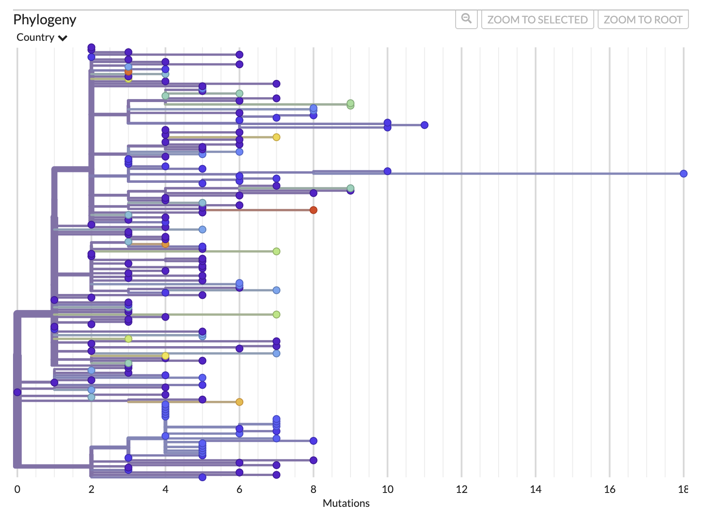

5. Visualizing the phylodynamic analysis
Now that we’ve constructed and packaged up a tree (analysis-package.json), we can visualize this data alongside the data augur has extracted from our metadata using augur and Auspice.
Note: I’ve had issues recently getting this to work in firefox so recommend using a chromium-based browser if you have issues.
5.1. Load data into Auspice
To do this, please navigate to http://IP-ADDRESS/module5/ and download the files trees/analysis-package.json and data/masked/b117_seq_complete_sampUK_aligned_filt_mask.tsv to your computer (if the link does not download you can Right-click and select Save link as…).
Next, navigate to https://auspice.us/ and drag the file analysis-package.json onto the page.
5.2. Explore data
Spend some time to explore the data and get used to the Auspice interface. Try switching between different Tree Layouts, Branch Lengths, or colouring the tree by different criteria in the metadata table. This is always worth doing a bit before diving into analyses. Scroll down and hit download to save the outputs of this for future reference. The nexus trees contain the internal node states along with the tree, so is readable into R and FigTree if you want to customize the tree more or analyze ancestral state transitions to identify sublineages or calculate dispersion rates etc.
5.3. Examine the molecular clock
Now we are going to look more at the Branch length “TIME” and “DIVERGENCE” option.
First, let’s look at the divergence tree and use the x-axis to work out how many mutations there are on certain branches. We can use the x-axis in the “RECTANGULAR” layout of the “DIVERGENCE” tree to work this out or we can directly move our cursor over the node/branch of interest to have a pop-up with the details.
The mutation tree: 
Now, we can do the same thing if we switch to “TIME” and look at the approximate inferred dates of the internal nodes of the tree. We can also mouse over to get the exact pop-up dates.
- What was the maximum number of mutations from the root to any tip?
- What was the most likely date of the root (AKA the time of the most recent common ancestor (TMRCA)) ? Confidence interval?
- How do you interpret the root of this phylogeny? Is it representative of the entire B.1.1.7 lineage?
- 18 (to tip MW598424.1/Ghana/2020-12-22). This tip could be considered a temporal outlier and excluded from the analysis.
- 2020-08-21, but the confidence interval is wide and lower bound is unrealistic (2016-05-31 - 2020-09-12)
- This root is the most recent common ancestor (MRCA) of a random sample of early B.1.1.7 sequences, downsampling the UK samples to an equal number as non-UK samples. It may not be fully representative of the full diversity of early B.1.1.7, nor later evolution of B.1.1.7.
Now, have a look at the “CLOCK” layout/figure found in the options bar on the left of your screen. This brings up a root-to-tip regression from the divergence tree (i.e., how many mutations from root to tip, versus collection date). You can click on individual points (including the upper outlier from Ghana) to see the average substitution rate for that tip. for that tip.
The root-to-tip regression plot:

- What is the slope of the root-to-tip regression (in subs/year; subs/site/year)? What does it represent?
- Does the trend line for the root-to-tip regression look like a good fit with good temporal signal?
- Given the data and trendline, how accurate do you think the inferred root date is?
- How might you estimate the uncertainty in these estimates?
- 14.9 substitutions per year. Or (ignoring masked sites), 14.9/29903=0.0004982778=5.0 subs/site/year. It represents the strict molecular clock rate.
- Aside from the outlier, it looks like a good fit (an R-squared value should really be reported) with reasonable temporal signal.
- The confidence interval on the root is wide, we have a relatively small (singular) sample, but the linear fit is decent and we included early samples with higher probabilities, so I’d say medium to low accuracy for the mean estimate.
- Multiple subsamples of higher sample sizes. Bootstrapping/ultrafast bootstrapping. Multiple clock rate assumptions when inferring the time tree.
5.4. Examine the ancestral state reconstruction
We can colour the tree and rename the tree tip labels using the metadata to reflect the ancestral state reconstruction. The internal nodes/branches will be coloured based on the inferred ancestral state, in this case Country or Geo_location. Investigate the ancestral states at internal nodes throughout the tree including at the root. Use the play button to visualize the dispersion globally.
Here is a look at what you should be seeing in auspice when you change branches to be colored by Country and choose the multi-panel layout.

- Based on this analysis, where was the root of B.1.1.7 likely to have occurred?
- How do you think sequence subsampling might have impacted this analysis?
- What additional data would give you more confidence in asserting where this lineage was likely to have originated?
- How could you use the output of this analysis to quantify viral dispersion?
- The United Kingdom
- We included far fewer sequences from the UK than were available, and still inferred it as the likely origin. It would be worth comparing other sampling schemes to validate this, but we have high confidence that this was the likely origin, given the sequences publicly available.
- More early B.1.1.7 sequences from other countries would be informative. Also, including close parental or sister lineages (like B.1 similar to B.1.1.7) of similar time/place could add resolution to the analysis.
- Quantify importation or exportation rates by country through time. You could also incorporate population size, connectivity (mobility data), geographical distance, and other factors to evaluate (or control for) factors associated with elevated dispersal.
That’s that for our maximum likelihood phylogeographic inference. Now, we’re going to compare those results to a Bayesian approach.